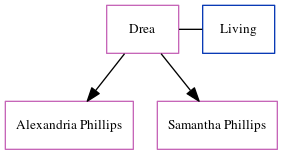

Drea Phillips
[ Home ] | [ Calendar ] | [ Surnames Index ] | [ Census Index ] | [ Family History ]Drea, the wife of Edward Gerard Phillips (the uncle of Michele Copp (née Phillips)), and married Edward (with whom she had 2 children: Alexandria and Samantha) in Miami-Dade, Florida, USA on Mar 24, 19901. In 1990, she was living in Miami, FL2.
Citations
- Florida, U.S., Marriage Indexes, 1822-1875 and 1927-2001 Ancestry.com Operations Inc (
Florida Department of Health. Florida Marriage Index, 1927-2001. Florida Department of Health, Jacksonville, Florida. Marriages records from various counties located in county courthouses and/or on microfilm at the Family History Library.
) - U.S., Public Records Index, 1950-1993, Volume 1 Ancestry.com Operations, Inc. (Voter Registration Lists, Public Record Filings, Historical Residential Records, and Other Household Database Listings.)
Family Tree
Generated by ged2site. Last updated on Jun 6, 2024